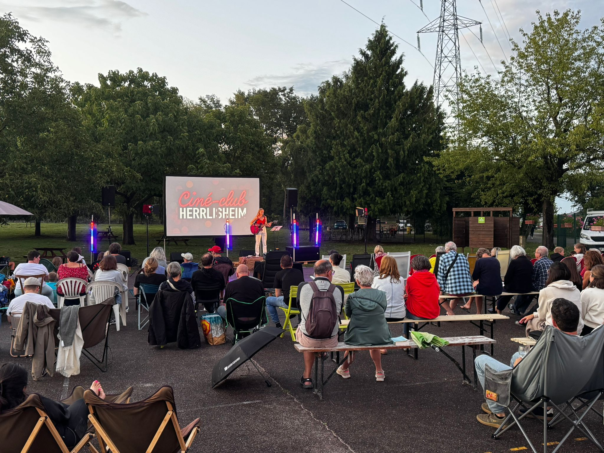
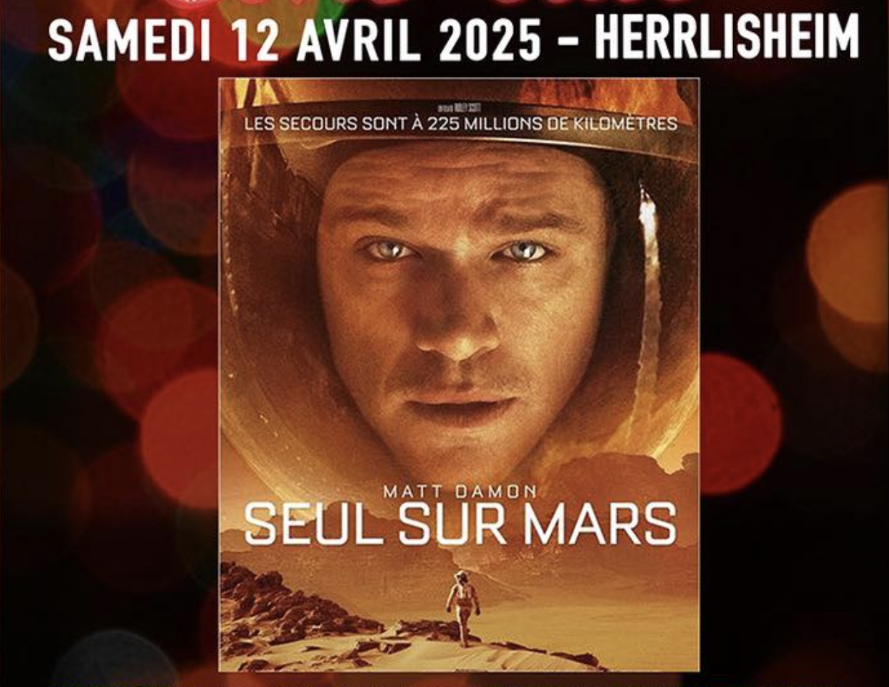
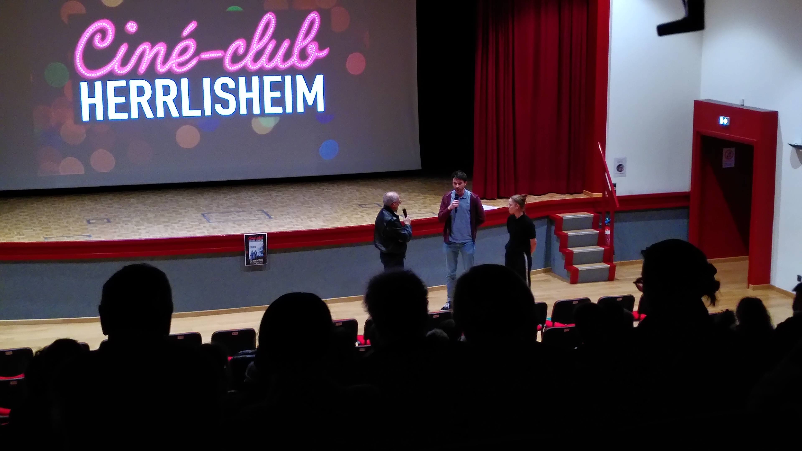
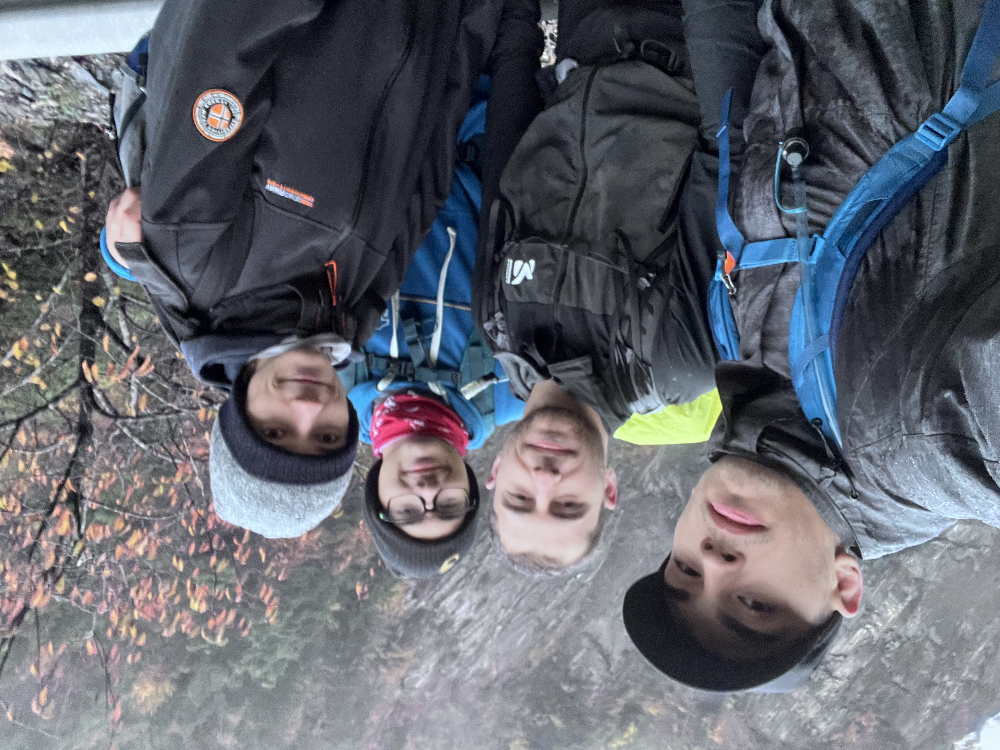
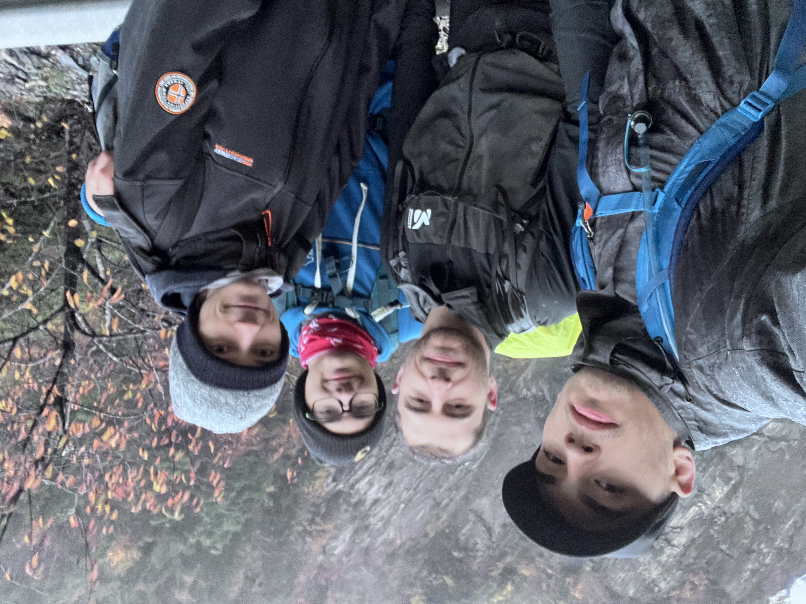

Ciné-club associatif
2023 – 2025
Expérience personnelle
Membre actif d’un ciné-club local, principalement chargé de la partie technique des séances : préparation du matériel audiovisuel, mise en place des projections et participation à l’analyse des films après visionnage.
Missions principales
- Installation et réglages du matériel (projecteur, sonorisation, câblage).
- Gestion technique des projections et résolution de petits problèmes sur place.
- Contribution à la sélection des films et aux supports visuels.
- Participation aux échanges et analyses après projection.
- Aide ponctuelle à la communication du club.
Compétences développées
- Maîtrise du matériel audiovisuel et des contraintes techniques de projection.
- Gestion technique en condition réelle.
- Communication orale lors des discussions après séance.
- Expérience mêlant technique, culture et travail collectif.



 
